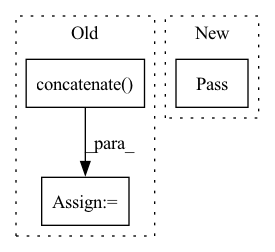

Pattern ID :31438
Before Change
else:
img_info = self.prepare_train_img(idx)
img = np.concatenate( (img_info["img"]["img1"], img_info["img"]["img2"]), axis=2)
transformed_data = self.transform(image=img, mask=img_info["ann"]["ann"])
transformed_image, img_info["ann"]["ann"] = transformed_data["image"], transformed_data["mask"]
img_info["img"]["img1"], img_info["img"]["img2"] = np.split(transformed_image, 2, axis=0+to_tensor_axis_bias)After Change
Returns:
dict: Training/test data (with annotation if ann_dir is not None).
pass
def __len__(self):
Total number of samples of data.
return len(self.img_infos)In pattern: SUPERPATTERN
Frequency: 4
Non-data size: 3
Instances Fragment ID: 92098124
Project Name: likyoo/change_detection.pytorch
Commit Name: a80fd1b4d8adb2d8b3db231d46ad1942fa4fdbfa
Time: 2021-08-06
Author: 1150249769@qq.com
File Name: change_detection_pytorch/datasets/custom.py
M Class Name: CustomDataset
N Class Name: CustomDataset
M Method Name: __getitem__(2)
N Method Name: __getitem__(2)
M Parent Class: Dataset
N Parent Class: Dataset
M File Name: change_detection_pytorch/datasets/custom.py
N File Name: change_detection_pytorch/datasets/custom.py
M Start Line: 228
M End Line: 242
N Start Line: 224
N End Line: 224
Before Change
def _get_feed_dict(self, index: int) -> dict:
target_item = self.data["item_id"][index]
neg_items = self.neg_items[index]
item_ids = np.concatenate( [[target_item], neg_items])
feed_dict = {"item_id": item_ids}
return feed_dict
// Prepare model-specific variables and buffer feed dictsAfter Change
// ! Key method to construct input data for a single instance
def _get_feed_dict(self, index: int) -> dict:
pass
// Called before each epoch
def actions_before_epoch(self) -> NoReturn:
pass Fragment ID: 92098132
Project Name: thuwangcy/rechorus
Commit Name: c4edfa4402cd70f204f41ee5b0793f6e8a0b456d
Time: 2020-11-17
Author: THUwangcy@gmail.com
File Name: src/models/BaseModel.py
M Class Name: Dataset
N Class Name: Dataset
M Method Name: _get_feed_dict(2)
N Method Name: _get_feed_dict(2)
M Parent Class: BaseDataset
N Parent Class: BaseDataset
M File Name: src/models/BaseModel.py
N File Name: src/models/BaseModel.py
M Start Line: 156
M End Line: 160
N Start Line: 157
N End Line: 157
Before Change
if is_evaluation_requested:
train_triples, test_triples = self.get_test_triples(train_triples=training_triples)
self.test_triples = test_triples
self.all_triples = np.concatenate( [train_triples, test_triples], axis=0)
training_triples, test_triples = self.map_triples(train_triples=self.train_triples,
test_triples=self.test_triples)
After Change
else:
// TODO: ADD CWA logic
pass
Fragment ID: 92098129
Project Name: pykeen/pykeen
Commit Name: 26306431f63d0784de56e88ebc483399f3fac0fc
Time: 2019-04-30
Author: ali-mehdi@live.de
File Name: src/poem/instance_creation_factories/triples_factory.py
M Class Name: TriplesFactory
N Class Name: TriplesFactory
M Method Name: create_instances(1)
N Method Name: create_instances(1)
M Parent Class:
N Parent Class:
M File Name: src/poem/instance_creation_factories/triples_factory.py
N File Name: src/poem/instance_creation_factories/triples_factory.py
M Start Line: 99
M End Line: 112
N Start Line: 122
N End Line: 133
Before Change
self.lon = xr_data["lon"].to_numpy()
def __getitem__(self, index):
np_data = np.concatenate( [self.data_dict[var][index] for var in self.data_dict.keys()], axis=0)
return torch.from_numpy(np_data)
def __len__(self):
return self.data_dict[list(self.data_dict.keys())[0]].shape[0]After Change
self.lon = xr_data["lon"].to_numpy()
def __getitem__(self, index):
pass
def __len__(self):
pass
Fragment ID: 92098128
Project Name: aditya-grover/climate-learn
Commit Name: ffa5a9dd5b79cb8782b48341b7a688d441477595
Time: 2022-09-11
Author: ductungnguyen1997@gmail.com
File Name: src/datamodules/era5_dataset.py
M Class Name: ERA5
N Class Name: ERA5
M Method Name: __getitem__(2)
N Method Name: __getitem__(2)
M Parent Class: Dataset
N Parent Class: Dataset
M File Name: src/datamodules/era5_dataset.py
N File Name: src/datamodules/era5_dataset.py
M Start Line: 52
M End Line: 53
N Start Line: 52
N End Line: 52